Aldo Balatti
D.I.D., IDSA, SPE, SME. Principal & Founder of Evolve Design Solutions. Senior Product Designer and Plastic Applications Specialist.
Aldo has worked on a wide range of new product programs, mostly from concept through to production.
Background
Aldo received an Industrial Design Diploma and scholarships from Georgian College in Barrie, Ontario, in 1984. Before founding Evolve Design Solutions Inc. in 2005, he spent 15 years as a product development consultant at two major design firms, where he led the plastic applications department and held the title of Design Engineering Director.
He has worked with Black & Decker, Nortel Networks, Motorola, General Motors, Electrolux, Canada Post, MDS Nordion, Hydro-Quebec, C-MAC and CCM, among many others.
His experience covers 3D CAD modelling, mold filling analysis and simulation, the development of injection-molded components and the selection of plastic materials. He is an advocate of design for manufacture and assembly (DFMA), concurrent engineering, rapid prototyping and rapid tooling, and holds many utility and design patents.
Before Evolve
Products Aldo developed at GID Design and DW, credited as on the current site.
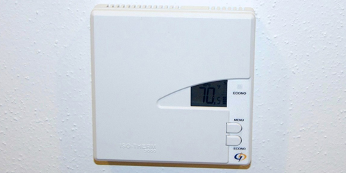
Isotherm 3000 Thermostat. C-MAC Energy & System. Aldo Balatti at GID Design.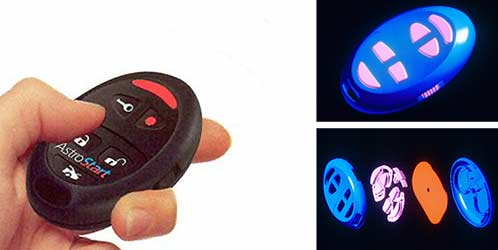
Astrostart Remote Key Fob. Astroflex. Aldo Balatti at GID Design.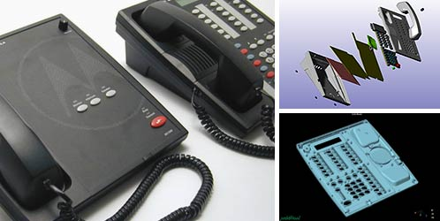
MC Series Deskset Controllers. Motorola (CML Emergency Services). Aldo Balatti at DW.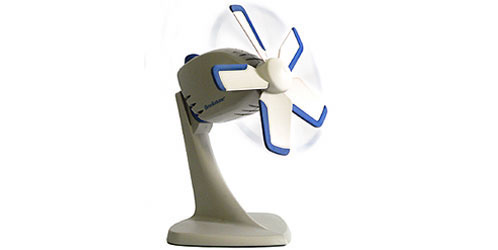
Elan Desktop Fan. Caframo. Aldo Balatti at DW.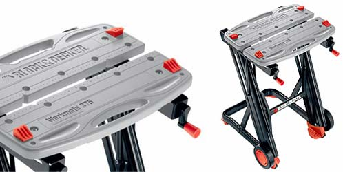
Workmate 375. Black & Decker. Aldo Balatti at DW.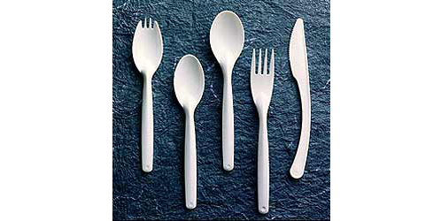
Disposable Cutlery Set. Industries Sansfacon. Aldo Balatti at GID Design.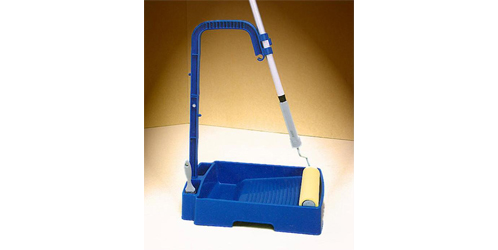
Painting Tray System. Prak-Tik. Aldo Balatti at GID Design.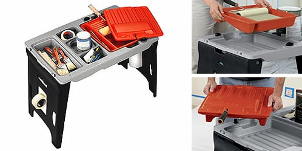
Workmate Portable Paint Station. Black & Decker. Aldo Balatti at DW.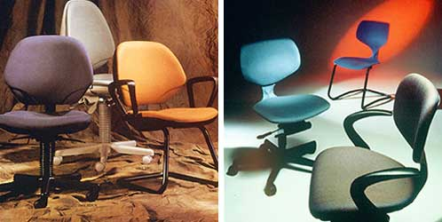
Bouty Dharma Office Seating. Bouty, and Teknion (Vertex Composites). Aldo Balatti at GID Design.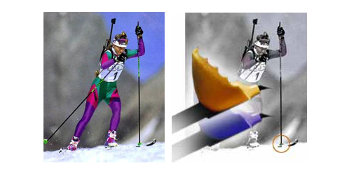
Cross-Country Ski Poles. Industrie Lafleche. Aldo Balatti at GID Design.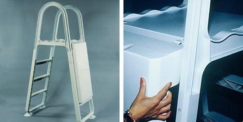
Pool Security Ladder. Waterpik Technologies (ACM Olympic). Aldo Balatti at GID Design.Aldo’s design awards
Aldo’s designs have been recognized with patents and awards, including the Industrial Design Excellence Awards (IDEA) sponsored by Business Week, the Good Design Award, the I.D. Magazine Annual Design Review, the National Post Design Exchange Awards, the Modern Plastics Innovation Design Award and SPI Awards of Excellence.
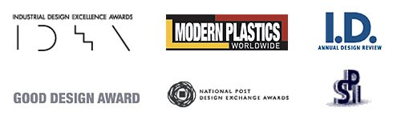
- 2011
- 2nd place Javelin/SolidWorks 2011 “Cool” Design ContestYuleys Footwear
- 2005
- DX National Post Bronze AwardBlack & Decker portable paintstation
- IDEA Business Week Silver AwardUFO GlowBuoy floating pool light
- Good Design AwardUFO GlowBuoy floating pool light
- 2004
- DX National Post Silver AwardUFO GlowBuoy floating pool light
- DX National Post Bronze AwardBlack & Decker 360 Bullseye laser level
- IDEA Business Week Bronze AwardBlack & Decker 360 laser level
- 2003
- DX National Post Bronze AwardBlack & Decker 375 Workmate
- 2002
- Modern Plastics Innovation DesignIAP ClearVision shield support system
- 2000
- IDEA Business Week Gold AwardSportscope Flex-Fit bicycle helmet
- 1997
- ID Annual Design Review, Excellence Awarddisposable cutlery set
- 1992
- 1st Price of Excellence, Montreal Kitchen & Bathroom ExpoUltra shower
- 1991
- (2) SPI Awards of Excellence, Business Equipment & InnovationDharma chair
- 1987
- ID Annual Design Review, Honorable MentionSwivel adjustable putter
Recognition and press
- 2009Canadian PlasticsThe May/June issue featured Evolve in an article on product design entitled “Designing for Success”. Evolve, with two other firms, was selected as experts in the field for the article.
- 2009Design WorldThe March issue featured Evolve’s hearing instruments smart remote control product development for Unitron Hearing in “Multi-Jet Modeling Helps Rush New Design to Market”, an article in its Digital Manufacturing Review supplement.
- 2008DPN (Design Product News)The November/December issue featured Evolve’s hearing instruments smart remote control product development for Unitron Hearing as its cover story, titled “Hearing Aid Remote Removes Stigma”.
- 2008Javelin TechnologiesEvolve was selected by Javelin Technologies to appear on “Javelin Customer Successes”.
- 2006Consumer Electronics AssociationA new product which Evolve Design Solutions helped develop was named a 2007 Design and Engineering Award Honoree by the Consumer Electronics Association (CEA), International CES Innovations.
- 2006Javelin TechnologiesJavelin Technologies presented Aldo Balatti of Evolve Design Solutions Inc. with a 2006 Customer Appreciation Award for being the first buyer and user of SolidWorks 3D CAD software in Canada, back in 1995.
Memberships and service
- Society of Plastics Engineers (SPE). Silver member. Elected an honorary member of the board of directors of the SPE Product Design and Development (PD3) division.
- Society of Manufacturing Engineers (SME). Senior member. Member of the Injection Molding and Design for Plastics technical groups since 2003; Chair of the Injection Molding Technical Group and member of the Engineering Materials and Applications steering committee, 2005 to 2006. He led the creation of SME’s Plastics Industry Solution Center, and of the Production Ready Mold Matrix, a joint project of William J. Tobin and the Injection Molding Technical Group.
- Industrial Designers Society of America (IDSA). Professional member.
- Moldflow IMUG. Appointed to the board of the International Moldflow User Group.
- Teaching and media. Guest lecturer on rapid prototyping and rapid tooling at Carleton University in Ottawa, guest speaker on the Discovery Channel, and author and presenter of many papers.
- Designers Accord. Evolve supports the coalition of design firms promoting positive environmental and social impact through their work.
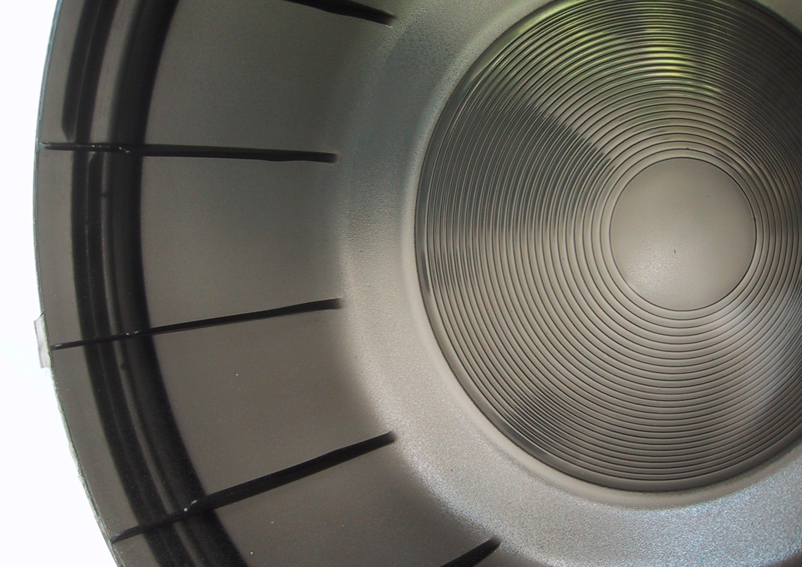
The practice
Mission
To help clients build and keep a competitive advantage through the quick introduction of innovative, attractive and cost-effective products, with less time, less risk and less cost, as consumer, environmental and manufacturing advocates.
Vision and business practices
We aim for long-term working relationships, a proven phased development process, and programs that make a difference to your bottom line. We listen, collaborate and create.
A personal welcome
Creating a great product is an accomplishment achieved by clients and suppliers working together as strategic business partners. If you are looking for a partner who shares your passion for excellence, we welcome the opportunity to speak with you.
In their words
15 testimonials from clients, suppliers and colleagues.
Evolve Design Solutions took our designs to a new level and helped make our product design world class.
Evolve Design Solutions has exceeded our expectations and went above and beyond what was expected of them. Evolve provided us the necessary solutions by having an overall business discussion instead of solely focusing on our existing project.
Over the years, Aldo has been a great asset to our design and engineering development team on many projects. His contribution, knowledge and expertise in plastics design, tooling, molding and prototyping have been truly beneficial in helping Electrolux with its mission for new product innovation.
Aldo’s expertise in plastics design and injection molding has been a tremendous asset to SME’s volunteer engagement and educational resource development efforts. He recently exhibited exemplary project management skills and creativity in spearheading the creation of SME’s Plastics Industry Solution Center. Aldo is a great contributor and collaborator.
It has been my pleasure and benefit to have worked with Aldo Balatti on several projects while at Nortel. Aldo Balatti is a talented designer, who has experience in a wide variety of manufacturing processes, especially plastics. Aldo brought a high level of dedication and professionalism to my projects and was an asset to my team.
I have been working on various new development programs with Aldo Balatti over the last 24 years. Aldo has always shown a good sense of understanding of the challenge for designing with various types of plastics. Aldo will evaluate various options to minimize the overall cost, including part cost, assembly cost, etc. His knowledge of the various manufacturing processes makes him an excellent mechanical designer for various industries.
I know Aldo very well as I have worked with him for over 8 years. He is a respected individual who is responsible, honest and loyal. His strength lies in his expertise in DFMA, manufacturing and plastic part design. When a manufacturer wants to develop a new product, this company must consider the large investment required in tooling and it is paramount to have an expert such as Aldo working with that manufacturer to maximize the chances of success.
I would not hesitate to recommend you to anyone who asks. I have always found you to be professional in your work and more importantly to me, you demonstrate true ownership of the projects that you take on. I truly believe that the success of the GlowBuoy was as important to you as it was to me and you became my most valuable team member. Your ingenious design and hard work resulted in the GlowBuoy winning the Silver Medal in the National Post Design Exchange Awards for 2004, a distinction we can both be very proud of.
Having worked closely with Aldo on boards of both the Society of Manufacturing Engineers (SME) and the International Moldflow Users Group (IMUG), I’ve found him to be a dynamic leader willing to take on responsibility for spreading knowledge he’s gained through his years of experience. He’s one of those people who not only makes the effort to keep his finger on the pulse of the plastics industry, but is proactive in ensuring this information gets to the people who need it.
Aldo was instrumental in helping us achieve a vision for the industrial design for the Tech 2, an electronic, automotive diagnostics tool. With leadership, he facilitated the QFD study and guided us through the concept definition and usage study, and rapidly provided us with multiple prototypes to select from. One of these was later selected as the basis of our product used to troubleshoot GM vehicles off the manufacturing line and at dealership shops.
Aldo has been part of two of my teams on industry projects, in SPE and in SME, and I am pleased to recommend his work, his expertise, his management and his ability coupled with willingness to do “whatever it takes” to achieve superior results with on-time performance. Aldo is a wonderful asset to work with in plastics. He has the knowledge and the diversity of experience to find the right solutions for product and plastic manufacturing. I would strongly suggest working with him, because he quickly becomes a “go to” guy for your operation!
Working with Aldo on several projects for just over a year, I was witness to his remarkable knowledge of plastics, manufacturing know-how and his keen attention to detail. Along with his professionalism and sense of fairness, contributing to the success of our shared projects, was Aldo’s sense of humor. I would be more than willing to work with Aldo at any time in the future!
Throughout a person’s career, it is important to have someone who you can simply trust to just know the answer to any question you may have; a colleague that you can turn to when you need to find the solution to a problem quickly. I have known only a few of these people, and Aldo Balatti is one of these few. Upon starting my design career I was fortunate to work within the same design firm as Aldo. In the large consultancy we worked in, he was the person that everyone approached to help find solutions for all design related issues. As a mentor to me, he passed on extensive knowledge of manufacturing and materials, and above all, in general design practice. I know I could not be where I am today without having worked with him.
As the former Director of Business Development at a reputable product development firm, I had the pleasure of working with Aldo on a number of projects. He was instrumental in developing creative and cost-effective design programs for our clients as well as contributing to the business and marketing aspects of the company. I consistently received positive comments from these same clients regarding Aldo’s thoroughness and his attention to the smallest details. His knowledge of how plastics can be best utilized in design is second to none. An all around good person, I would not hesitate to give him my highest recommendation.
I have worked with Aldo for several years now on a variety of projects. Throughout each process it was clear to me that my job was going to be easier because of the breadth of technical knowledge Aldo brings to the table, and of the attention to detail to make sure it is done right. When you have people like that on your project team, it is like building a cross functional team of molding, tooling, materials and design experts in one package. This is concurrent engineering at its simplest form. I would not hesitate to engage Aldo in any project I would be considering, as he will bring value regardless of the purpose.
Creating your next product, or revamping a product line? We welcome the conversation.
Have an idea for a new project?
info@evolve-designsolutions.com+1 613 482 9626
Aldo Balatti, Ottawa, Ontario. Fee-for-service proposals or design services retainers.